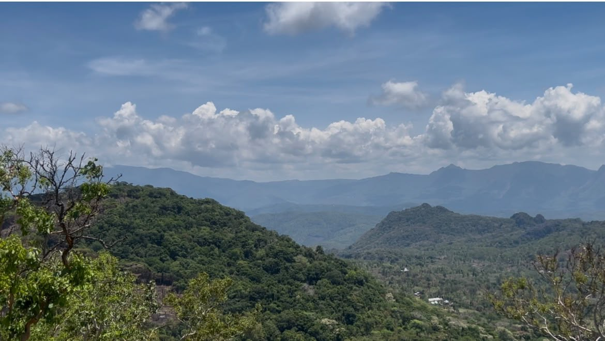

Objek & Wisata
Amfoang Selatan, Kab. Kupang
Informasi Kartografi
Skala Peta: 1 : 65.000
Sistem Grid: Geografis & UTM
Proyeksi: Transverse Mercator
Datum: WGS 1984 / UTM 51S
Destinasi Wisata Unggulan

Air Belerang
Wisata AlamMata air belerang alami di Amfoang Selatan dengan keindahan alam sekitarnya serta khasiat air hangat alami.

Bukit Humon
Savana & BukitPanorama perbukitan savana nan hijau menakjubkan dengan pemandangan terbuka khas dataran tinggi Amfoang.

Tangga Seribu
Wisata PanoramaJalur tangga panorama yang menawarkan pemandangan spektakuler perbukitan dan lanskap alam pegunungan.


Rumah Pohon & Kongkon
Spot FotoSpot gardu pandang alami dengan latar belakang perbukitan hijau yang asri dan sejuk.
Destinasi & Fasilitas Lainnya:
- Batu Basusun: Formasi batuan geologi unik tersusun bertingkat
- Kali Besar: Aliran sungai alami pegunungan Amfoang
- Kantor Pertama di Amfoang: Lokasi sejarah cagar budaya
- Gunung Merah: Panorama puncak perbukitan
- Fasilitas Publik: PAUD Pertiwi, SMKN 2 Amfoang Selatan, Gereja Pniel 2 Lelogama, Gereja Oh'aem
Peta Hasil Olahan QGIS • Kab. Kupang, NTT